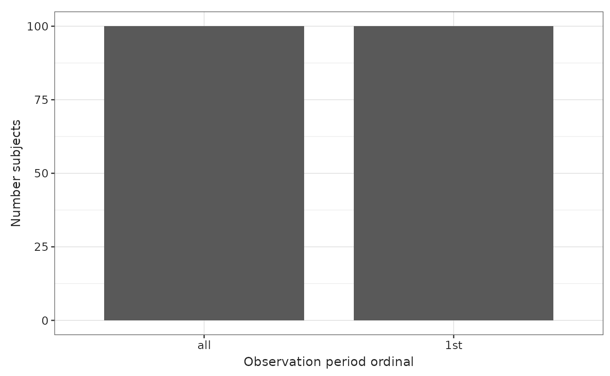
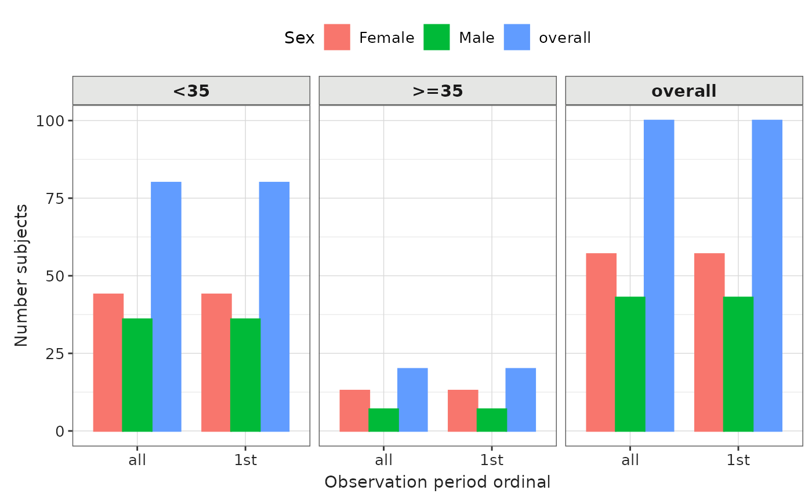
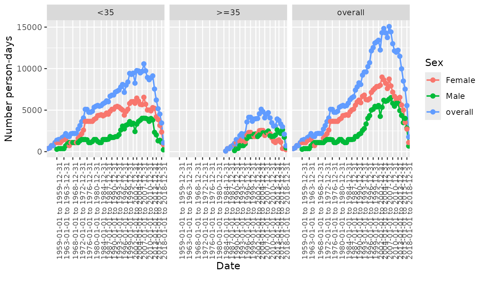

Summarise observation period
Source:vignettes/summarise_observation_period.Rmd
summarise_observation_period.RmdIntroduction
In this vignette, we will explore the OmopSketch functions
designed to provide an overview of the observation_period
table. Specifically, there are five key functions that facilitate
this:
-
summariseObservationPeriod(),plotObservationPeriod()andtableObservationPeriod(): Use them to get some overall statistics describing theobservation_periodtable -
summariseInObservation()andplotInObservation(): Use them to summarise the number of individuals in observation during specific intervals of time.
Create a mock cdm
Let’s see an example of its functionalities. To start with, we will load essential packages and create a mock cdm using the mockOmopSketch() database.
library(dplyr)
#>
#> Attaching package: 'dplyr'
#> The following objects are masked from 'package:stats':
#>
#> filter, lag
#> The following objects are masked from 'package:base':
#>
#> intersect, setdiff, setequal, union
library(OmopSketch)
# Connect to mock database
cdm <- mockOmopSketch()Summarise observation periods
Let’s now use the summariseObservationPeriod() function
from the OmopSketch package to help us have an overview of one of the
observation_period table, including some statistics such as
the Number of subjects and Duration in days
for each observation period (e.g., 1st, 2nd)
summarisedResult <- summariseObservationPeriod(cdm$observation_period)
summarisedResult
#> # A tibble: 3,102 × 13
#> result_id cdm_name group_name group_level strata_name strata_level
#> <int> <chr> <chr> <chr> <chr> <chr>
#> 1 1 mockOmopSketch observation_pe… all overall overall
#> 2 1 mockOmopSketch observation_pe… all overall overall
#> 3 1 mockOmopSketch observation_pe… all overall overall
#> 4 1 mockOmopSketch observation_pe… all overall overall
#> 5 1 mockOmopSketch observation_pe… all overall overall
#> 6 1 mockOmopSketch observation_pe… all overall overall
#> 7 1 mockOmopSketch observation_pe… all overall overall
#> 8 1 mockOmopSketch observation_pe… all overall overall
#> 9 1 mockOmopSketch observation_pe… all overall overall
#> 10 1 mockOmopSketch observation_pe… all overall overall
#> # ℹ 3,092 more rows
#> # ℹ 7 more variables: variable_name <chr>, variable_level <chr>,
#> # estimate_name <chr>, estimate_type <chr>, estimate_value <chr>,
#> # additional_name <chr>, additional_level <chr>Notice that the output is in the summarised result format.
We can use the arguments to specify which statistics we want to
perform. For example, use the argument estimates to
indicate which estimates you are interested regarding the
Duration in days of the observation period.
summarisedResult <- summariseObservationPeriod(cdm$observation_period,
estimates = c("mean", "sd", "q05", "q95"))
summarisedResult |>
filter(variable_name == "Duration in days") |>
select(group_level, variable_name, estimate_name, estimate_value)
#> # A tibble: 8 × 4
#> group_level variable_name estimate_name estimate_value
#> <chr> <chr> <chr> <chr>
#> 1 all Duration in days mean 4549.63
#> 2 all Duration in days sd 4281.19855693933
#> 3 all Duration in days q05 98
#> 4 all Duration in days q95 14804
#> 5 1st Duration in days mean 4549.63
#> 6 1st Duration in days sd 4281.19855693933
#> 7 1st Duration in days q05 98
#> 8 1st Duration in days q95 14804Additionally, you can stratify the results by sex and age groups, and specify a date range of interest:
summarisedResult <- summariseObservationPeriod(cdm$observation_period,
estimates = c("mean", "sd", "q05", "q95"),
sex = TRUE,
ageGroup = list("<35" = c(0, 34), ">=35" = c(35, Inf)),
dateRange = as.Date(c("1970-01-01", "2010-01-01")))
summarisedResult |>
select(group_level, variable_name, strata_level, estimate_name, estimate_value) |>
glimpse()
#> Rows: 135
#> Columns: 5
#> $ group_level <chr> "all", "all", "all", "all", "all", "all", "all", "all",…
#> $ variable_name <chr> "Number records", "Number subjects", "Records per perso…
#> $ strata_level <chr> "overall", "overall", "overall", "overall", "overall", …
#> $ estimate_name <chr> "count", "count", "mean", "sd", "q05", "q95", "mean", "…
#> $ estimate_value <chr> "94", "80", "1", "0", "1", "1", "3587.54255319149", "27…Notice that, by default, the “overall” group will be also included, as well as crossed strata (that means, sex == “Female” and ageGroup == “>35”).
Tidy the summarised object
tableObservationPeriod() will help you to create a table
(see supported types with: visOmopResults::tableType()). By default it
creates a [gt] (https://gt.rstudio.com/) table.
summarisedResult <- summarisedResult <- summariseObservationPeriod(cdm$observation_period,
estimates = c("mean", "sd", "q05", "q95"),
sex = TRUE)
summarisedResult |>
tableObservationPeriod()
#> ℹ <median> [<q25> - <q75>] has not been formatted.| Observation period ordinal | Variable name | Estimate name |
CDM name
|
|---|---|---|---|
| mockOmopSketch | |||
| overall | |||
| all | Number records | N | 100 |
| Number subjects | N | 100 | |
| Records per person | mean (sd) | 1.00 (0.00) | |
| Duration in days | mean (sd) | 4,549.63 (4,281.20) | |
| 1st | Number subjects | N | 100 |
| Duration in days | mean (sd) | 4,549.63 (4,281.20) | |
| Female | |||
| all | Number records | N | 57 |
| Number subjects | N | 57 | |
| Records per person | mean (sd) | 1.00 (0.00) | |
| Duration in days | mean (sd) | 5,030.07 (4,615.40) | |
| 1st | Number subjects | N | 57 |
| Duration in days | mean (sd) | 5,030.07 (4,615.40) | |
| Male | |||
| all | Number records | N | 43 |
| Number subjects | N | 43 | |
| Records per person | mean (sd) | 1.00 (0.00) | |
| Duration in days | mean (sd) | 3,912.77 (3,751.30) | |
| 1st | Number subjects | N | 43 |
| Duration in days | mean (sd) | 3,912.77 (3,751.30) | |
Visualise the results
Finally, we can visualise the concept counts using
plotObservationPeriod().
summarisedResult <- summariseObservationPeriod(cdm$observation_period)
plotObservationPeriod(summarisedResult,
variableName = "Number subjects",
plotType = "barplot")
Note that either Number subjects or
Duration in days can be plotted. For
Number of subjects, the plot type can be
barplot, whereas for Duration in days, the
plot type can be barplot, boxplot, or
densityplot.”
Additionally, if results were stratified by sex or age group, we can
further use facet or colour arguments to
highlight the different results in the plot. To help us identify by
which variables we can colour or facet by, we can use visOmopResult
package.
summarisedResult <- summariseObservationPeriod(cdm$observation_period,
sex = TRUE)
plotObservationPeriod(summarisedResult,
variableName = "Duration in days",
plotType = "boxplot",
facet = "sex")
summarisedResult <- summariseObservationPeriod(cdm$observation_period,
sex = TRUE,
ageGroup = list("<35" = c(0, 34), ">=35" = c(35, Inf)))
plotObservationPeriod(summarisedResult,
colour = "sex",
facet = "age_group")
Summarise in observation
OmopSketch can also help you to summarise the number of individuals in observation during specific intervals of time.
summarisedResult <- summariseInObservation(cdm$observation_period,
interval = "years")
summarisedResult |>
select(variable_name, estimate_name, estimate_value, additional_name, additional_level)
#> # A tibble: 132 × 5
#> variable_name estimate_name estimate_value additional_name additional_level
#> <chr> <chr> <chr> <chr> <chr>
#> 1 Number records… count 1 time_interval 1954-01-01 to 1…
#> 2 Number records… count 2 time_interval 1955-01-01 to 1…
#> 3 Number records… count 2 time_interval 1956-01-01 to 1…
#> 4 Number records… count 2 time_interval 1957-01-01 to 1…
#> 5 Number records… count 3 time_interval 1958-01-01 to 1…
#> 6 Number records… count 4 time_interval 1959-01-01 to 1…
#> 7 Number records… count 4 time_interval 1960-01-01 to 1…
#> 8 Number records… count 4 time_interval 1961-01-01 to 1…
#> 9 Number records… count 5 time_interval 1962-01-01 to 1…
#> 10 Number records… count 5 time_interval 1963-01-01 to 1…
#> # ℹ 122 more rowsNote that you can adjust the time interval period using the
interval argument, which can be set to either “years”,
“quarters”, “months” or “overall” (default value).
summarisedResult <- summariseInObservation(cdm$observation_period,
interval = "months")
summarisedResult |>
select(variable_name, estimate_name, estimate_value, additional_name, additional_level)
#> # A tibble: 1,584 × 5
#> variable_name estimate_name estimate_value additional_name additional_level
#> <chr> <chr> <chr> <chr> <chr>
#> 1 Number records… count 1 time_interval 1954-01-01 to 1…
#> 2 Number records… count 1 time_interval 1954-02-01 to 1…
#> 3 Number records… count 1 time_interval 1954-03-01 to 1…
#> 4 Number records… count 1 time_interval 1954-04-01 to 1…
#> 5 Number records… count 1 time_interval 1954-05-01 to 1…
#> 6 Number records… count 1 time_interval 1954-06-01 to 1…
#> 7 Number records… count 1 time_interval 1954-07-01 to 1…
#> 8 Number records… count 1 time_interval 1954-08-01 to 1…
#> 9 Number records… count 1 time_interval 1954-09-01 to 1…
#> 10 Number records… count 1 time_interval 1954-10-01 to 1…
#> # ℹ 1,574 more rowsAlong with the number of records in observation, you can also
calculate the number of person-days by setting the output
argument to c(“records”, “person-days”).
summarisedResult <- summariseInObservation(cdm$observation_period,
output = c("records", "person-days"))
summarisedResult |>
select(variable_name, estimate_name, estimate_value, additional_name, additional_level)
#> # A tibble: 4 × 5
#> variable_name estimate_name estimate_value additional_name additional_level
#> <chr> <chr> <chr> <chr> <chr>
#> 1 Number person-d… count 454963 overall overall
#> 2 Number records … count 100 overall overall
#> 3 Number person-d… percentage 100 overall overall
#> 4 Number records … percentage 100 overall overallWe can further stratify our counts by sex (setting argument
sex = TRUE) or by age (providing an age group). Notice that
in both cases, the function will automatically create a group called
overall with all the sex groups and all the age groups. We can
also define a date range of interest to filter the
observation_period table accordingly.
summarisedResult <- summariseInObservation(cdm$observation_period,
output = c("records", "person-days"),
interval = "quarters",
sex = TRUE,
ageGroup = list("<35" = c(0, 34), ">=35" = c(35, Inf)),
dateRange = as.Date(c("1970-01-01", "2010-01-01")))
summarisedResult |>
select(strata_level, variable_name, estimate_name, estimate_value, additional_name, additional_level)
#> # A tibble: 1,664 × 6
#> strata_level variable_name estimate_name estimate_value additional_name
#> <chr> <chr> <chr> <chr> <chr>
#> 1 Male &&& <35 Number person-da… count 270 time_interval
#> 2 Male Number person-da… count 270 time_interval
#> 3 Female Number person-da… count 270 time_interval
#> 4 Female &&& <35 Number person-da… count 270 time_interval
#> 5 Male Number records i… count 3 time_interval
#> 6 Female Number records i… count 3 time_interval
#> 7 Male &&& <35 Number records i… count 3 time_interval
#> 8 Female &&& <35 Number records i… count 3 time_interval
#> 9 Male &&& <35 Number person-da… count 276 time_interval
#> 10 Male Number person-da… count 276 time_interval
#> # ℹ 1,654 more rows
#> # ℹ 1 more variable: additional_level <chr>Visualise the results
Finally, we can visualise the concept counts using
plotInObservation().
summarisedResult <- summariseInObservation(cdm$observation_period,
interval = "years")
plotInObservation(summarisedResult)
#> `result_id` is not present in result.
#> `result_id` is not present in result.Notice that either Number records in observation and
Number person-days can be plotted. If both have been
included in the summarised result, you will have to filter to only
include one variable at time.
Additionally, if results were stratified by sex or age group, we can
further use facet or colour arguments to
highlight the different results in the plot. To help us identify by
which variables we can colour or facet by, we can use visOmopResult
package.
summarisedResult <- summariseInObservation(cdm$observation_period,
interval = "years",
output = c("records", "person-days"),
sex = TRUE,
ageGroup = list("<35" = c(0, 34), ">=35" = c(35, Inf)))
plotInObservation(summarisedResult |>
filter(variable_name == "Number person-days"),
colour = "sex",
facet = "age_group")
#> `result_id` is not present in result.
#> `result_id` is not present in result.
Finally, disconnect from the cdm
PatientProfiles::mockDisconnect(cdm = cdm)